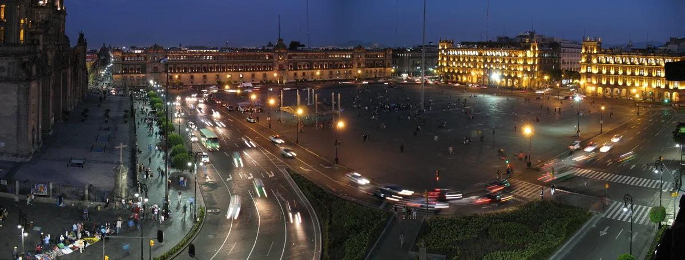
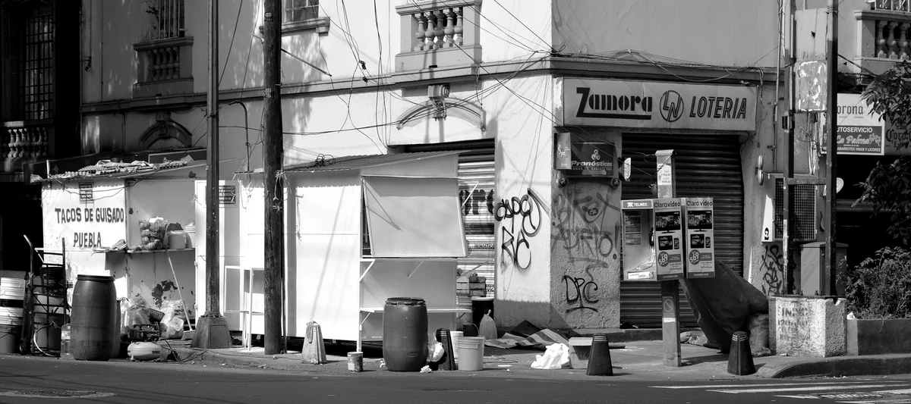
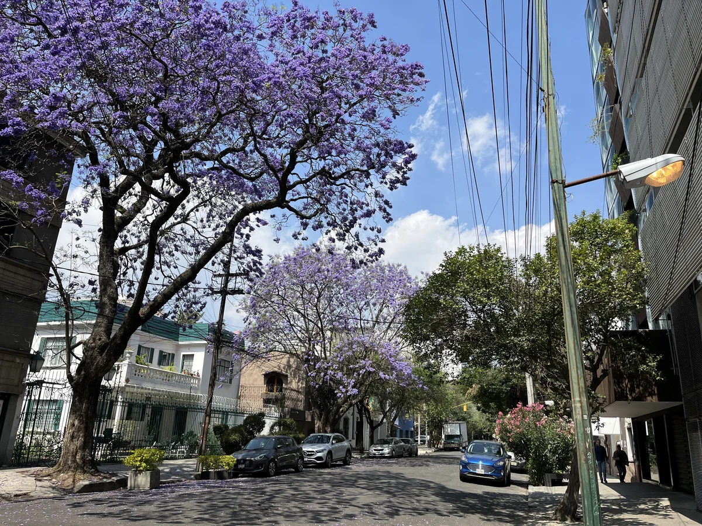

Mexico City clubs
The best clubs in Mexico City, from Patrick Miller to M.N.Roy
A Roma Norte dance hall that has run every Friday since 1983, a former Communist Party mansion turned private club, and the basement rooms that have pulled international bookers to the city since 2017: the best clubs in Mexico City now.
Four decades in a few square kilometres.
Mexico City's club scene spans four decades in a few square kilometres. Its oldest room is a downtown dance hall that has run every Friday since 1983, its most photographed room occupies a mansion that once housed the Mexican Communist Party, and its newest wave of basement clubs has spent the last few years drawing international bookers and press. This guide covers all three kinds of night out, plus where they sit relative to each other.
Patrick Miller, in more depth.
Patrick Miller began in 1983, when Mexican DJ Roberto Devesa, who performs under the same name as the club, started organising parties at the Journalists Club in downtown Mexico City. The club now occupies an old warehouse with sheet-metal roofs in Roma Norte, at Mérida 17, and it has kept the format that made it a fixture: retro pop, disco and dance hits, a ground floor built around an open dance circle, and a crowd of all ages who come to compete rather than just watch. It's open only on Fridays.

The club's own description, from Mexico City's tourism authority, calls it "a cult space for pure dancing." Time Out has covered it since at least 2018, when it wrote that Patrick Miller had been "the official home to dance-off circles and tunes" for over two decades already; by 2025 its own "10 mejores antros de la CDMX" list was still sending readers to watch the Friday-night dance circle. Entry costs a few dozen pesos, and drinks are cheap. It remains one of the clearest links to the city's pre-internet club history still running on its original format.
The best clubs in Mexico City now.
| Club | Area | Music and character | Best for |
|---|---|---|---|
| Patrick Miller | Roma Norte, since 1983, Fridays only | Retro pop and disco around an open dance-off circle, run on the same format for decades | The clearest link to the city's pre-internet club history |
| M.N.Roy | Roma Norte, since the early 2010s | House, minimal and techno in a former Communist Party mansion redesigned by Chic by Accident | A private club built as much around its architecture as its bookings |
| Fünk Club | Condesa/Hipódromo border, since 2019 | International headliners and local crew residencies on a Funktion One sound system | A basement room that helped establish the city's underground scene internationally |
| Yu Yu Cine Club | Juárez, since 2017 | A small, intimate basement room with Drama Bar downstairs, built for collaboration with other crews | An intimate, community-first night out |
M.N.Roy, Fünk and the current scene.
M.N.Roy, in a converted mansion at Mérida 186 in Roma Norte, occupies a building that once served as the headquarters of the Mexican Communist Party. French design studio Chic by Accident, run by Emmanuel Picault and Ludwig Godefroy, reworked the interior with copper tiles, concrete floors and rough timber block walls, capping the dance floor with a soaring timber pyramid. It runs as a private club with a members' system, and its programming stays close to house, minimal and techno.

Fünk Club, a few kilometres away on the border of Condesa and Hipódromo, took a different route to the same result. Founded by brothers Adrian and Marco Valadez and opened in 2019, the basement room built its reputation on a Funktion One sound system and a booking policy that mixes international headliners, among them Craig Richards, Daphni, Chez Damier and DJ Harvey, with residencies from local crews like Capricho and the all-female collective MORFEMA. DJ Mag's own 2024 reporting on the city credited Fünk, alongside M.N.Roy and a handful of others, with helping establish Mexico City's underground scene internationally.

Not every club night in the city runs on imported house and techno. Sonideros, the mobile sound systems that have played cumbia and tropical music at Mexico City street parties since the 1940s and 50s, get their own dedicated episodes of Boiler Room's SYSTEM series, which covers Latin American cities and regularly gives sonidero DJs the same billing as touring international names.
A smaller room, Yu Yu Cine Club, has run since 2017 from the basement of a nineteenth-century building on Calle Versalles in Juárez, with a Drama Bar on the ground floor that has grown into a second, more eclectic room of its own. It has booked Hyperdub's Kode9, Bristol producer Batu and Berghain regular Roi Perez, and its bookers describe it as a deliberately small, collaborative space built to work with the city's other clubs and crews rather than compete with them.
Where to go out in Mexico City.
Three of these four cluster within a short taxi ride of each other. Patrick Miller sits in Roma Norte, a few streets from M.N.Roy on Mérida; Fünk is a short ride further south-west, on the Condesa/Hipódromo border; and Yu Yu is north of both, in Juárez, close to the Zona Rosa. All three neighbourhoods have gentrified hard over the past decade, filling with cafés, galleries and restaurants alongside the clubs, but the club map itself keeps shifting: Perreo Millennial, a reggaeton party that had run for ten years and helped drive the city's perreo scene into the mainstream, played its final event in August 2026 after announcing on Instagram that it was ending. It never held one fixed address, so it isn't part of the table above, but its closure is as current a fact about Mexico City clubbing as any venue's opening night.
Older names come up constantly in conversations about the city's history: Pervert Lounge and City Hall, both prominent in the late 1990s and 2000s for trance, house and techno, are talked about by promoters now in their forties as the rooms that trained them, though neither was researched to the same depth as the four clubs above for this guide.
None of that has stopped major international DJs from treating the city as a regular stop. Boiler Room's own Mexico City broadcasts go back to at least 2018, when British house and techno DJ Nic Fanciulli played a set that remains one of the platform's most watched.
Mexico City clubs FAQ.
Is Patrick Miller still open?
Yes. It has run every Friday from its Roma Norte warehouse since 1983, and current listings from Time Out and the city's own tourism site both still send visitors to its dance-off circle.
What is M.N.Roy in Mexico City?
A private club in a converted Roma Norte mansion that once served as the headquarters of the Mexican Communist Party. French studio Chic by Accident redesigned the interior, and the club's programming runs house, minimal and techno.
What is the oldest club in Mexico City?
Among the clubs in this guide, Patrick Miller, running since 1983. Older venues from the city's 1990s and 2000s club scene, including Pervert Lounge and City Hall, are still discussed by Mexico City DJs but were not researched in depth for this guide.
Is reggaeton and perreo a big part of Mexico City's club scene?
Yes, though it runs mostly through parties rather than a single venue. Perreo Millennial, the city's best-known reggaeton party, ran for ten years before playing its final event in August 2026; DJ Mag's 2024 feature on the scene quoted local bookers describing perreo as one of the fastest-growing sounds in the city's current underground.
Are there other clubs in Mexico City worth knowing about?
Yes, though this guide researched four in depth. Older names like Pervert Lounge and City Hall, and newer parties and rooms tied to crews such as Capricho, Por Detroit and Disco Fetish, turn up constantly in Mexico City's own nightlife coverage.
Sources.
- Resident Advisor: RA Guide to Mexico City
- DJ Mag: Inside Mexico City's vibrant electronic underground (2024)
- Time Out Mexico City: Bars and Nightclubs
- Patrick Miller's 1983 founding, Journalists Club origin and current Mérida 17 address, per Mexico City's own tourism authority (mexicocity.cdmx.gob.mx) and Time Out.
- M.N.Roy's Mérida 186 address, former Communist Party headquarters history and Chic by Accident interior design, per The Spaces, "Cult clubs: 12 legendary venues across the world."
- Perreo Millennial's closure, announced 30 July 2026 with a final event on 13 August 2026, per Resident Advisor's own news feed.
- M.N.Roy's exact opening date is given only as "the early 2010s"; no primary source confirming a precise month was found this session.
Continue reading
Read next.
 Rave spots~11 min read
Rave spots~11 min readBest Clubs in NYC: From the Paradise Garage to Nowadays
Nowadays, Basement, Public Records, Good Room and Elsewhere: the best clubs in NYC for house and techno now, and the history from the Loft to Output.
Read article → Rave spots~7 min read
Rave spots~7 min readBest Clubs in Tokyo: WOMB, Contact and the Ban on Dancing
WOMB, Contact, Vent and Circus Tokyo: the best clubs in Tokyo for house, techno and bass music, and the 68-year law against dancing that shaped them.
Read article → Rave spots~6 min read
Rave spots~6 min readBest Clubs in Budapest: A38, Instant-Fogas and Turbina
A38's converted cargo ship, the seven rooms of Instant-Fogas and Turbina's techno nights: the best clubs in Budapest now, and the ruin bars several grew out of.
Read article → Rave spots~6 min read
Rave spots~6 min readBest Clubs in Prague: Cross Club, Karlovy Lázně and Ankali
Cross Club's salvaged machinery, Karlovy Lázně's five floors and Ankali's techno nights: the best clubs in Prague, mainstream and underground.
Read article →